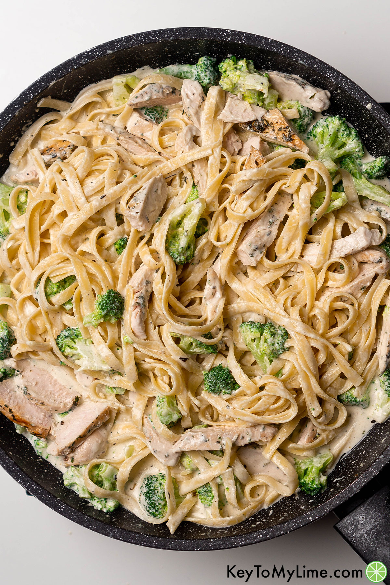

Chicken Alfredo
Description
CLICK ME!!!Chicken Alfredo is unique dish in the United States. Giving the delicious alfredo sauce with cooked chicken and pasta. This is my second favorite dish for myself and for the family as well.
Ingredients
- 8 ounces fettuccine or spaghetti, uncooked
- 2 cups fresh broccoli florets
- 1/4 cup KRAFT Zesty Italian Dressing
- 1 pound boneless skinless chicken breast, cut into bite-sized pieces
- 1 2/3 cups of milk
- 4 ounces PHILADELPHIA Cream Cheese, cubed
- 1/2 cup KRAFT Grated Parmesan Cheese
- 1/2 teaspoon dried basil leaves
Steps
- Cook pasta in large saucepan as directed on package, adding broccoli to the cooking water for the last 2 min.
- Meanwhile, heat dressing in large nonstick skillet on medium heat. Add chicken; cook 5 to 7 min. or until done, stirring occasionally. Add milk, cream cheese, Parmesan and basil; cook and stir 3 to 5 min. or until cream cheese is melted and sauce is well blended.
- Drain pasta mixture; place in large bowl. Add chicken mixture; mix lightly.